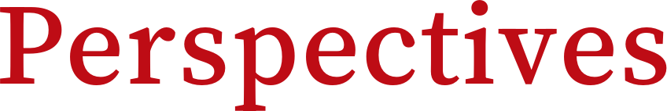

About the magazine
Perspectives
Perspectives is an international magazine and website for young creators aged 13 to 25. We publish entertainment made by young people, for young people, in every form: writing, visual art, fashion and design, photography and film, music and performance, games and digital culture, and the criticism that surrounds them.
01 Our mission
Our mission is to return the creation of entertainment to young people themselves.
For a long time, entertainment trends have been defined by others, and young people could only play the part of followers. We believe the trends of the next era should be created by young people themselves.
Perspectives gives emerging creators a stage on which to be seen, read and heard, and brings into the spotlight the passions once dismissed as unworthy of print.
We do not bow to convention, and we do not follow trends.
We break boundaries, define youth entertainment, and we are the trend.
02 Principles
What we promise
our contributors.
Perspectives is committed to the following principles in its work with contributors:
-
Copyright stays with the creator
Contributors retain full copyright, and every published work is credited with the creator's name and account.
-
Never used to train AI
No submitted work is used to train artificial intelligence or altered by it.
-
You see the final layout first
Contributors review the final layout prior to publication, and no work is published without their consent.
-
Every submission gets a reply
Every submission receives a response from the editorial team.
03 An open invitation
Perspectives welcomes correspondence and submissions in every language, in the belief that entertainment knows no borders.
Submit your work04 The beginning
Founded in August 2026 by Steve Wu and Eason Lin, students at XCL World Academy, Singapore.

Students write, students read.